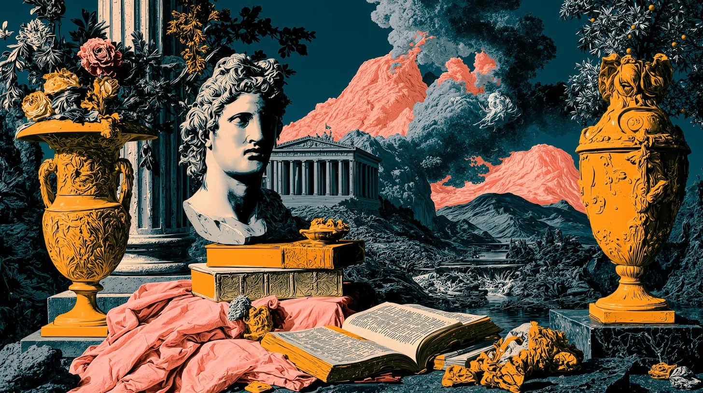
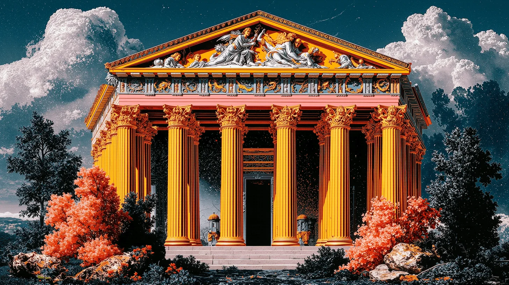

Maison Elysian · Catalogue one
Issued from nowhere
Move the light across the plate
Four fields · one reading each
Places that were never built.
Four fields, drawn from nowhere, catalogued and issued once.
Open the ledgerThe ledger
Everything here was found before it existed.
We record what the world declined to make, then hold it under glass. Nothing is for sale. The ledger is the whole of the house.
- Vanitas with a borrowed mountain Interior, no season, one range on loan from a painting
- The reading room at the edge Terrace, column, and an eruption kept in rehearsal
- The valley that keeps its colour Water, ochre, and a tree that will not turn
- The temple that opens at night Portico, gold, and a sky still being drawn
A classical still life: a gilt frame holding a snow mountain, plaster busts, blue urns and open books, under a teal sky with coral clouds.
Vanitas with a borrowed mountain
A mountain was lifted out of a painting and set on a table, where it kept its own weather. Height, uncertain. Weight, refused.
Plate one · interior, no season

The reading room at the edge
The book has stayed open at the same page for a hundred years. Behind it the sky rehearses an eruption it never performs.
Plate two · terrace, late light, no wind
The valley that keeps its colour
Ochre meadow, blue rock, one gold tree, water running north. Surveyed in September, then again in March. The second survey matched the first exactly.
Plate three · one season, held open

The temple that opens at night
The doors are unlocked only while you are asleep. Nobody who has been inside can draw it afterwards.
Plate four · gold on a sky still being drawn
The fifth field
One field is still missing.
It has been drawn twice and both drawings disagree. Break the seal if you want to be told when they settle.
Elysian issues nothing on request. Leave an address and a place you have never been, and we will write when the fifth field settles.